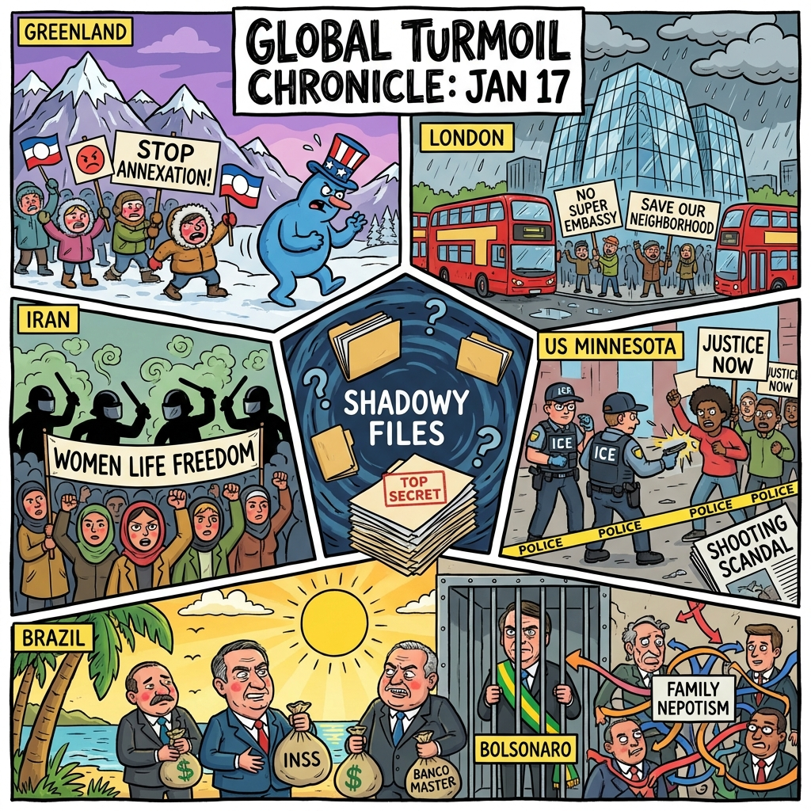

The Daily Globe: Protests in Greenland and Denmark Against Trump's Push to Acquire Greenland, ICE Shooting and Federal-Local Clashes in Minnesota, and Banco Master and INSS Corruption Scandal
Published on 2026-01-18

World
- Protests in Greenland and Denmark Against Trump's Push to Acquire Greenland
Demonstrations in Nuuk and Copenhagen against U.S. tariff threats and annexation plans, fearing cultural erasure and imperialism.
- Global Protests Against Iran's Government Crackdown on Dissent
Worldwide solidarity actions by exiled Iranians amid reports of halted killings; viral memes symbolize resistance to regime abuses.
- UK Protests Against China's Proposed 'Mega Embassy' in London
Rallies decry the planned embassy as a security threat and symbol of Beijing's influence, with MPs calling China the 'worst regime'.
USA
- ICE Shooting and Federal-Local Clashes in Minnesota
Fatal shooting by ICE agent during protests leads to federal investigations into state leaders for impeding operations.
- Trump's Foreign Policy Threats Including Greenland Tariffs
Tariffs on Europe for opposing U.S. Greenland bid, airstrikes in Venezuela, and calls for Iran regime change spark imperialism debates.
- Epstein Files Coverup and Domestic Scandals
Renewed outrage over handling of Epstein files tied to midterms and Supreme Court tariff powers ruling.
Brazil
- Banco Master and INSS Corruption Scandal
Alleged embezzlement from INSS via Banco Master involving Lula's ex-daughter-in-law, son, and brother; accused of robbing retirees.
- Bolsonaro's Legal Drama and Calls for Amnesty
Habeas corpus transferred to Gilmar Mendes after Moraes recusal; Michelle meets Moraes; demands for January 8 prisoners' amnesty.
- "Emenda Família" Bipartisan Corruption
Amendment allows NGOs to hire relatives of politicians, uniting left, right, and centrists in nepotism scandal.
Topic Index
- greenland-protests
- trump-tariffs
- iran-crackdown
- china-mega-embassy
- minnesota-ice-shooting
- immigration-clashes
- epstein-coverup
- banco-master-scandal